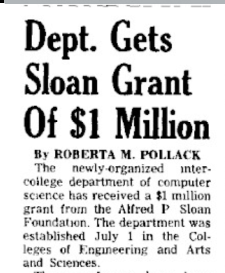

-

1965
The Department of Computer Science (CS) is formed, with Juris Hartmanis. Gerard Salton, “the father of Information Retrieval”, brings his SMART system to Cornell from Harvard. CS produces its first PhD, Joel Sturman, a transfer from Electrical Engineering.
-
1971
Dick Conway's group develops PL/C, a subset of PL/1, designed for instructional purposes. The PL/C compiler is distributed to 100 institutions and instantly becomes the standard instructional PL/1 compiler.
-

1974
The Program of Computer Graphics is started under the leadership of Don Greenberg --the first major computer graphics facility supported by the NSF.
-
/https://public-media.si-cdn.com/filer/be/fe/befe39cf-721d-4641-a3c0-42ff3c85ffec/nmah-jn2014-3401.jpg)
1977
CS acquires its first computer, a PDP 11/60.
-

1978
CS introduces two undergrad degrees: BA in Arts & Sciences and BS in Engineering.
-

1980
Cornell Engineering pioneers the use of advanced computer graphics in undergraduate education with the establishment of CADIF: the Computer Aided Design Instructional Facility. Don Greenberg is its first Director, and David Gries is head of the oversight committee.
-

1983
ACM SIGIR establishes the Gerard Salton Award to honor those who have made significant, sustained, and continuing contributions to research in information retrieval. The first recipient is Gerry Salton himself.
-

1991
Bruce Donald and Dan Huttenlocher receive an NSF grant for an undergrad teaching lab in robotics and vision, the first of its kind in the nation.
-

1993
Stratus Computer acquires Ken Birman's Isis Distributed Systems, Inc. Isis is now the core technology used in the NY and Swiss Stock Exchanges, the French Air Traffic Control System, and by the US Navy.
-

1996
Ronitt Rubinfeld organizes a "computer science fair" to showcase undergraduate research. This has blossomed into the annual BOOM (Bits On Our Mind), in which cutting-edge student research in digital technology all over the Cornell campus is displayed, with awards and also a K-12 outreach program. Visit boom.cornell.edu/.
-

1998
With CS providing inspiration and leadership, Cornell starts the Faculty of Computing and Information Science (CIS) to provide a home for interdisciplinary computing work of all kinds. CS, the Program for Computer Graphics, and Digital Libraries are part of it.
-

1999
Former students John Belizaire and Julian Pelenur sell their company, Theory Center, Inc. The one-year-old company, a leading provider of Java Beans, was sold to BEA Systems for $100 million.
-

2001
The national organization Engineers for a Sustainable World is started at Cornell under the direction of Regina Clewlow, CS ’01. In 2014, there are chapters in 40 universities.
-

2003
CS offers an undergrad Information Science major in Arts & Sciences.The Cornell Game Design Initiative is formed under the direction of David Schwartz.
-

2005
CS offers an undergrad degree in Information Science, Systems, and Technology in Engineering, jointly with Operations Research & Industrial Engineering. The PhD program in Information Science is approved.
-

2010
Bill & Melinda Gates Hall, the future home of the CIS departments of CS and IS, is fully funded with no debt before the first shovel hit the ground. Starting with a generous $25 million donation from the Bill & Melinda Gates Foundation, fundraising for the $60 million project concludes in the fall of 2010 with donors from almost every Cornell college.
-

2014
LinkedIn ranks Cornell the third best school in the United States for software developers. Bill Gates dedicates Gates Hall on 1 October and holds a 1-hour discussion with Cornell President Skorton. On 1-2 October, CS holds its 50th anniversary symposium.